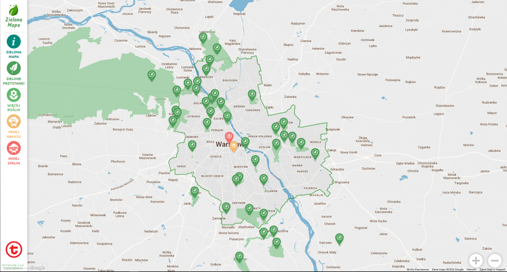

Ekologiczna Strona
Parki w Polsce
Park Narodowy Białowieski
- Najstarszy park narodowy w Polsce, pełen unikalnej fauny i flory.
Kampinoski Park Narodowy
- Oaza dzikiej przyrody w pobliżu Warszawy.
Tatrzański Park Narodowy
- Malownicze góry i różnorodność przyrodnicza Tatr.
Bieszczadzki Park Narodowy
- Piękne krajobrazy i dzika przyroda na południu Polski.
Woliński Park Narodowy
- Unikalne klify i nadmorska przyroda na wyspie Wolin.
Przydatna strona do znalezienia zielonego miejsca w pobliżu Warszawy
https://zielonamapa.waw.pl

Miejsca dla fanatyków kwiatów w Warszawie
Ogród botaniczny Uniwersytetu Warszawskiego
Ogród botaniczny PAN w Powsinie
Łazienki królewskie
Park Skaryszewski